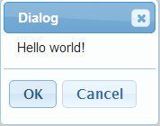
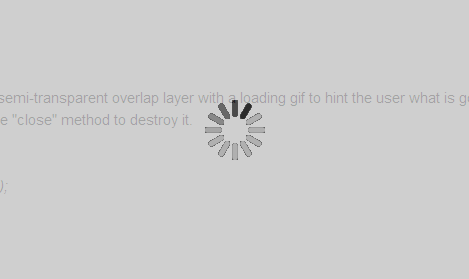
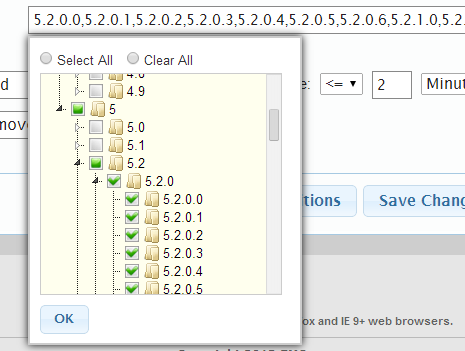

:: XCommon Document > Welcome
Get to use it!
$.namespace(string)
This function will create a namespace for a certain module, in order to provide a functional scope and not pollute the global space.Array.prototype.indexOf(element)
This function returns the index of some element in current array.Array.prototype.each(function)
The parameter works as a callback, which will be invoked on each element of current array. It will pass the element and the corresponding index into the callback function.Example:
var arr=[1,2,3];
arr.each(function(element,index){
//Here goes some logic with parameter 'element' and 'index'
});
Array.prototype.clone()
This function returns the copy of current array.Array.prototype.mapClone(function)
The parameter works as a callback function on each element and its index. It returns a a copy of current array, elements of which is the return value of the callback function.Example:
var arr=['a','b','c'];
var newArr=arr.mapClone(function(element,index){
return index+":"+element;
});
//newArr: ['0:a','1:b','2:c']
String.prototype.trim()
Works just like in Java.String.prototype.format({key1:val1,key2:val2, ...} OR val1,val2,...)
This function will replace the format string and return a new string.It has two ways to pass parameters, json style or list style.
Example:
var template1="{somebody} will arrive at {time}";
var result1=template1.format({"somebody":"peter","time":"12:00"});
//result1: peter will arrive at 12:00
var template2="{0} will arrive at {1}";
var result2=template2.format("peter","12:00");
//same with result1
Object.create(object)
Implementation of prototype inheritance.Function.prototype.bind(thisArgument)
Bind the function to the given 'this' context and return it as a new function object.Function.prototype.curry(arg1 [,arg2,arg3...])
Curry style. The parameters of this function can be not complete, and it returns a curry function.Example:
function add(n1,n2,n3,n4){
return n1+n2+n3+n4;
}
var addCurry=add.curry(1,2);
addCurry(3,4); // 1+2+3+4=10
addCurry(5,6); // 1+2+5+6=14
COM.EMC.UTIL.requireJS(url [,callback])
This function will import the javascript library file asynchronizedly with the url parameter. The callback parameter is optional, when complete loading this resource, it will be invoked.To be metioned, if you do not pass 'callback' parameter, it will load this resource syncronizedly, which will block the script execution until finish loading.
COM.EMC.UTIL.requireCSS(url [,callback])
This function will import the CSS file asynchronizedly with the url parameter. The callback parameter is optional, when complete loading this resource, it will be invoked.To be metioned, if you do not pass 'callback' parameter, it will load this resource syncronizedly, which will block the page rendering until finish loading.
You also need to pay attention to the resource URL in this CSS file, because the path should relate to current HTML page, instead of this stylesheet.
COM.EMC.UTIL.getURLParameter(parameter)
This function will return the value of given parameter in current url address.Example:
COM.EMC.UTIL.getURLParameter("uid"); //returns "9034" when current url is "localhost:8080/xxx?uid=9034"
COM.EMC.UTIL.reload(url1 [,url2,url3,...])
This function will preload the resources, such as images, stylesheets, audios and so forth.COM.EMC.UTIL.guid()
Generate global universal identifier.COM.EMC.DATE.dateToStr(date [,options])
This function requires a Date object and a json parameter.This json parameter can have 3 properties at most: date_concatenator("-" by default), time_concatenator(":" by default), containTime(true by default).
Example:
COM.EMC.DATE.dateToStr(new Date(),{date_concatenator:"/",containTime:false});
//returns "2013/12/22"
COM.EMC.DATE.dateToStr(new Date(),{containTime:true});
//returns "2013-12-22 08:10"
COM.EMC.DATE.getCurrentUTCDate()
Returns UTC Date object of current client environment.The time region depends on the client browser.
COM.EMC.DATE.localeDateToUTCDate(localeDate)
This function requires a Date object which represents locale time(should be a javascript Date object). It returns the UTC Date object.The time region depends on the client browser.
COM.EMC.DATE.utcDateToLocaleDate(utcDate)
Transforms UTC Date to locale Date object.COM.EMC.DATE.utcDateToLocaleDate(timezone [,utcDate])
It requires two parameters, 'timezone' is a string and utcDate is optional.Timezone list:
"GMT", "EST", "CST", "MST", "PST", "EDT", "CDT", "MDT", "PDT".
This function returns locale Date object of given timezone.
COM.EMC.TEST.assert(expression,msg)
If the value of 'expression' equals FALSE, then throw out a exception with the given message of parameter 'msg'.COM.EMC.TEST.assert(value1,value2,msg)
If the 'value1' does not equal to 'value2', then throw out a exception with the given message of parameter 'msg'.COM.EMC.VALIDATE.validate(selector,regex)
It validates if the text value of given node(referenced by parameter 'selector') matches the regular expression (referenced by parameter 'regex').To be metioned, 'regex' can also be a normal expression.
COM.EMC.VALIDATE.createValidator(selector,regex)
It creates a validator object which has only one method, "validate()".COM.EMC.VALIDATE.validate(array)
Requires an array of Validator instances. This method will invoke "validate()" in every Validator of this array.Example:
var num_validator=COM.EMC.VALIDATE.createValidator("#num_field","\\d+");
var name_validator=COM.EMC.VALIDATE.createValidator("#name_field","\\w+");
var isValid=COM.EMC.VALIDATE.validate([num_validator, name_validator]);
1. UI configuration
With a configuration json, you can initiate UI styles to override the default configurations.The default configurations are:
var config={
title:"Blank Page", // title of page
font_family:"Arial, Helvetica, sans-serif", // font of page
body_width:"1000px", // width of body tag
body_margin:"0px auto",
background_color:"white", // background color of body
background_image:"", //background image of body
background_image_repeat:"",
background_image_position:"",
head_image:"", // image head of page
head_height:"82px",
head_text_system:"System Name",
head_text_application:"Application Name",
head_text_system_color:"WHITE",
head_text_system_size:"16pt",
head_text_application_color:"WHITE",
head_text_application_size:"20pt",
foot_info:"", // foot information
rights_info:"", // rights information
head_div_selector:"#head", // head image div
content_div_selector:"#content", // content div
foot_div_selector:"#foot", // foot div id
menu_div_selector:"#menu", //menu div id
dialog_div_selector:"#dialog", //dialog div id
menu_font_color:"#FFFFFF", //menu font color
menu_bg_color:"#333333", //menu background color
menu_hover_font_color:"#FFFFFF", //menu hover font color
menu_hover_bg_color:"#538ECB", //menu hover background colors
menu_height:"30px", //menu height
menu_font_size:"10pt", //menu font size
menu_item_padding:"15px", //menu item padding
dialog_font_size:"11pt", //dialog font size,
loading_image:"", //loading image
loading_div_selector:"#loadingDiv", //loading div selector
welcome_info:"Welcome"//welcome info
};
Example:
var ui=COM.EMC.UI;
ui.configUI({
menu_hover_font_color:"#EEE",
title:"XCommon Doc",
head_image : "images/head_image.png",
head_text_system : "Documents and Examples",
loading_image:"images/loadingPage.gif",
head_text_application : "XCommon",
foot_info : "This website is best viewed using Chrome, Firefox and IE 9+ web browsers.<br/>",
rights_info : "Copyright 2013 EMC.<br/>"
});
2. Create page
This page object has one method, "addMenuBar", which means we can add a menu bar later.Example:
var ui=COM.EMC.UI; var page=ui.createPage();
3. Create menu bar
You need to create it via Page instance, and then, create a number of first-level menu items and add them to the bar.Also, you can set welcome information on the bar via "setWelcomeInfo()" method.
Example:
var ui=COM.EMC.UI;
var page=ui.createPage();
var menubar=ui.createMenuBar();
page.addMenuBar(menubar);
var m1=ui.createMenuItem("Menu1");
var m2=ui.createMenuItem("Menu2");
menubar.addMenuItems(m1,m2); //OR, menubar.addMenuItem(m1); menubar.addMenuItem(m2);
menubar.setWelcomeInfo();
4. Create menu items
There are two places to put a menu item: in the menu bar and be a sub-item of another menu item.Menu item has two methods: "addClickListener()" and "setSubMenuItems()".
"addClickListener()" method enables you to pass in String parameter or a Function parameter, and another "context" parameter is optional. When the first parameter is a string, it acts as a URL of some resource, and this method can lead the page to the url. When the first parameter is a function, it acts as a callback.
"setSubMenuItems()" requires a list of MenuItem objects as parameters.
Example:
var ui=COM.EMC.UI;
var page=ui.createPage();
var menubar=ui.createMenuBar();
page.addMenuBar(menubar);
var m1=ui.createMenuItem("Menu1");
var m2=ui.createMenuItem("Menu2");
menubar.addMenuItems(m1,m2); //OR, menubar.addMenuItem(m1); menubar.addMenuItem(m2);
m1.addClickListener("www.emc.com"); //url
m2.addClickListener(function(){ //callback
//callback function logic goes...
});
var sm1=ui.createMenuItem("SubMenu1");
var sm2=ui.createMenuItem("SubMenu2");
m1.setSubMenuItems(sm1, sm2); //add sub menu items to m1
5. Create dialog
It requires a json format parameter, and it has these default settings:
var params={
isNew:true, // use a new dialog or a existed one
title:"Dialog", //Dialog title
html:"", //HTML format content
buttons:[], //button array, [{text:"...", click:function(){...} }, {...}, ... ] format
modal:true,
resizable:false
};
All the settings is optional and can be overrided by input parameter. And the "buttons" setting should be an array of json ("{text:..., click:...}").
If you do not set "buttons" property, the dialog will automatically provide a "Close" button to
enable you to close this dialog.Additionally, Dialog object has one method "close()" to destroy it.
Example:

var ui=COM.EMC.UI;
ui.createDialog({
html:"<p>Hello world!</p>",
buttons:[{text:"OK",click:function(){console.log("OK");}}, {text:"Cancel",click:function(){console.log("Cancel");}}],
resizable:true
});
6. Create loading gif
When page is loading, you can create a semi-transparent overlap layer with a loading gif to hint the user what is going on.When finishes loading, you can invoke the "close" method to destroy it.

Example:
var ui=COM.EMC.UI; var loadingGif=ui.createLoadingGif(); //later, you can destroy it loadingGif.close();
7. Create tree list
(requires "jquery.jstree.js", you can do this via "COM.EMC.UTIL.requireJS()" function)
A tree list looks like this:
You need to write down a HTML code block, for example:
<div id="tree_div"> <input type="radio" name="tree_radio" id="select_all"/> <label for="select_all">Select All</label> <input type="radio" name="tree_radio" id="clear_all"/> <label for="clear_all">Clear All</label> <div id="tree"></div> <a id="ok_btn">OK</a> </div>The above HTML code represents a tree list layer, and it consists of two radio buttons, one tree list layer, and one button.
Also, you may define a INPUT element to trigger this tree list to display:
<input type="text" id="tree_input"/>When creating a tree list, you need to pass in a json format parameter. It has these attributes: "input", "div", "tree", "selectAll", "clearAll", "ok", "themePath".
"input" is the selector of input element which triggers the tree list to display. (In the above HTML example, is "#tree_input")
"div" is the selector of tree list layer itself. (In the above HTML example, is "#tree_div")
"tree" is the selector of tree list DIV. (In the above HTML example, is "#tree")
"selectAll" and "clearAll" are two radio buttons to select and deselect all the nodes in the tree. (In the above HTML example, is "#select_all" and "#clear_all")
"ok" is the selector of the button to confirm the selection. (In the above HTML example, is "#ok_btn")
"themePath" is the url of jstree theme folder relative to current page. (In the above HTML example, is "javascripts/lib/themes/")
After initalize the HTML side, you need to construct the tree data-structure by TreeNode object.
Firstly, you need to create all the roots; then, you can add children to the parent nodes level by level. At last, you need to add the roots to the TreeList object.
When tree structure is complete, you can invoke "initTreeUI()" to do UI initialization and "enableEventCallBacks" to make widgets responsive.
By default, the tree list is editable (you can select and deselect and click buttons), but you can also disable it by "setIsEditable()" method of TreeList.
Example:
<!--HTML code-->
<div id="tree_div">
<input type="radio" name="tree_radio" id="select_all"/>
<label for="select_all">Select All</label>
<input type="radio" name="tree_radio" id="clear_all"/>
<label for="clear_all">Clear All</label>
<div id="tree"></div>
<a id="ok_btn">OK</a>
</div>
<input type="text" id="tree_input"/>
//js code
var ui=COM.EMC.UI;
var root1=ui.createTreeNode("1","1"); //create tree node
var root2=ui.createTreeNode("2","2");
var node1=ui.createTreeNode("1.1","1.1");
var node2=ui.createTreeNode("1.2","1.2");
root1.addChildren(node1, node2); //OR, root1.addChild(node1); root1.addChild(node2);
//bind HTML selector with TreeList
var tree = ui.createTreeList({
input : "#tree_input",
div : "#tree_div",
tree : "#tree",
selectAll : "#select_all",
clearAll : "#clear_all",
ok : "#ok_btn",
themePath:"javascripts/lib/themes/"
});
//put tree datastructure into tree list ui
tree.addRoot(root1);
tree.addRoot(root2);
//init UI
tree.initTreeUI();
tree.enableEventCallBacks();
//OR, tree.setIsEditable(false), to disable the widgets.
8. Pagination
(requires "pagination.js" and "pagination.css", you can do this via "COM.EMC.UTIL.requireJS()/requireCSS()" functions)
The function "pageTable()" requires a json format parameter, it has several parameters and their default values are:
var params={
items_per_page:5, //number of rows of each page
current_page:0,
num_display_entries:8, //number of visible page icons
from:1, //head row number
row_selector:undefined, //selector of rows to be paged
pager_selector:undefined //selector of pagination bar
};
You can override some of these settings. To be mentioned, you need to write a DIV element with the id equals to the "pager_selector" attribute.
Example:
<!--HTML code-->
<div id="pageBar"></div>
//js code
var ui=COM.EMC.UI;
ui.pageTable({
row_selector:"#dataTable>tbody>tr",
page_selector:"#pageBar" //you need to write a div with id "pageBar" in the HTML
});
Welcome!
Firstly, make sure you have:
1. jQuery lib2. jQuery UI plugins
3. XCommon lib
4. XCommon UI stylesheet
Optionally, you may need:
(Other resources can be imported dynamically via "COM.EMC.UTIL.requireXXX()" functions.)
1. jstree plugin2. pagination plugin
Lastly, you need to prepare a HTML page, for example:
<!DOCTYPE html> <html> <head> <meta charset="UTF-8"> <meta http-equiv="Cache-Control" content="no-cache"> <meta http-equiv="Pragma" content="no-cache"> <link href="stylesheets/lib/redmond/jquery-ui-1.10.1.custom.css" rel="stylesheet" type="text/css" /> <link href="stylesheets/lib/XCommonUI-3.0.css" rel="stylesheet" type="text/css" /> <title>Index Page</title> <script type="text/javascript" src="javascripts/lib/jquery-1.9.1.min.js"></script> <script type="text/javascript" src="javascripts/lib/jquery-ui-1.10.1.custom.min.js"></script> <script type="text/javascript" src="javascripts/lib/XCommon-3.0.js"></script> <!--Other resources ...--> </head> <body> <div id="head"> </div> <div id="menu"> </div> <div id="content"> <div class="xui_url_dir"> :: Index </div> <div class="xui_title_bar"> Index </div> <div class="xui_content_body"> Welcome! </div> </div> <div id="foot"> </div> </body> </html>